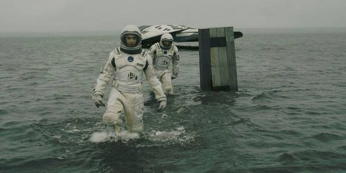
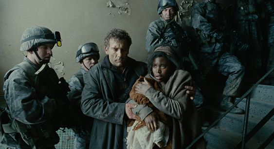

harry Potter
envolve uma história de protagonistas do bem contra antagonistas do mal, que resolvem suas disputas com o uso de força física, neles o bem sempre prevalece sobre o mal.
Ver filmes >

Interstellar
Os filmes apresentam desafios enfrentados em um relacionamento amoroso como tema principal da história e, na maioria das vezes, trazem um final feliz.
Ver filmes >

Filhos da Esperança
é um gênero cinematográfico que procura uma reação emocional negativa dos espectadores, ao jogar com os medos primários da audiência.
Ver filmes >